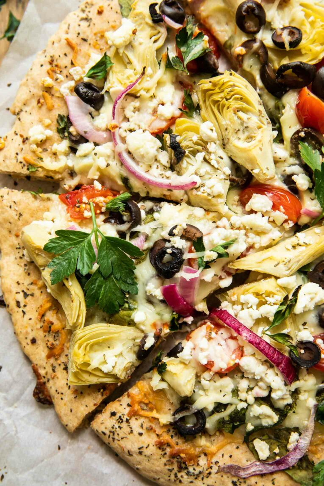

Mediterranean Pizza
Home

Description
An untraditional, spicy, and all vegitarian take on pizza. Instead of a tomato-based sauce, this recipe uses olive oil infused with rosemary. The toppings are a mix of common Mediterranean ingredients.
However, you are free to add/replace with some of your favorite veggies. Enjoy!
Ingredients
Sauce
- 1/4 cup olive oil
- 1 sprig fresh rosemary
- 2 cloves garlic
- 1/4 teaspoon salt
- 1/4 teaspoon red pepper flakes
- 1/8 teaspoon black pepper
Toppings
- 1/4 red onion, sliced or diced
- 3 cremini mushrooms, sliced
- handful of cherry tomatoes, halfed
- 1 jalapeño, diced
- 1/4 cup pickled artichoke hearts, leaves seperated
- 1/4 cup kalamata olives, halfed
- 6-8 oz shredded mozzarella cheese
- sprinkle of feta cheese
- Premade Pizza Dough, 16 0z
Steps
- Preheat oven 400 degrees F.
- Flour surface and rollout dough into any shape. Got a rectangle pan? Make it rectangle. Got a round pan? Make it round. Shape of pizza is a freeform art.
- Cook the pizza in the oven for about 8 minutes. When you take it out, make sure to untick the pizza from the pan.
- Start prepping the sauce. Finely chop the rosemary leaves and garlic. Mix them, salt, black pepper, and pepper flakes into the olive oil. Set aside.
- Start prepping the rest of the toppings.
- Spread the sauce onto the cooked dough/pizza. Spread all the toppings to your liking.
- Return the pizza to the oven for another 15-20 minutes.
- Once the pizza is cooked, cut into pieces or eat it like a taco, you monster.